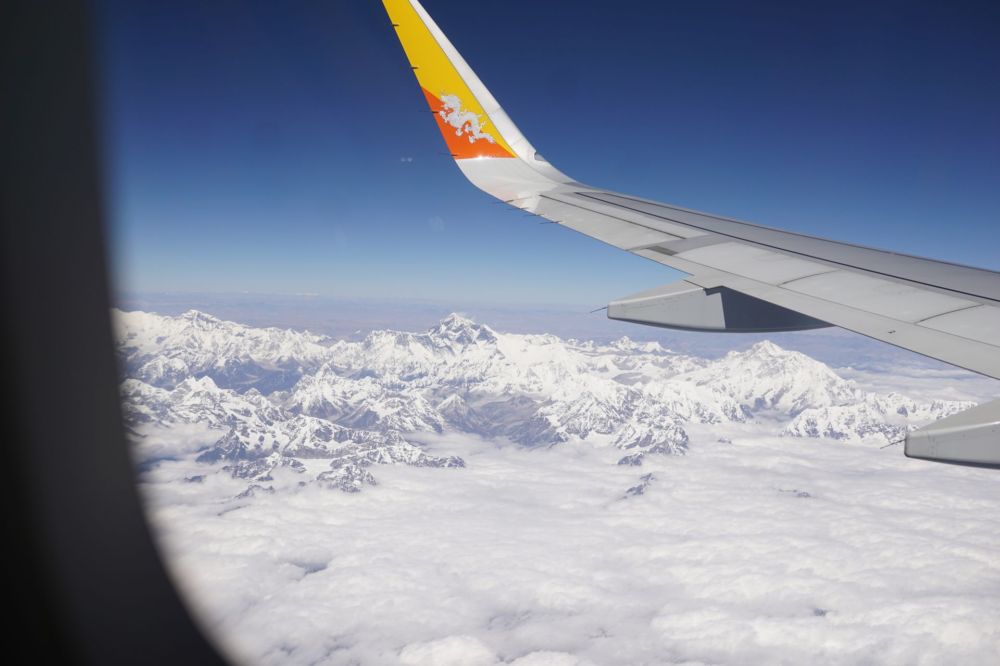

Background
This was my second trip to Bhutan in as many months. I didn’t plan to make two trips but it turned out that way. I only had a week or so to get to Bhutan, get my permits sorted to travel to central Bhutan, pick up my motorcycle and then ride through east Bhutan to Guwahati.
Here are some lightly edited notes I jotted on my phone during this trip. I will try and sprinkle a few photos in between.
Itinerary, Expenses at the end
The Trip
Day 1 - not really
TLDR - I miss my flight to Bhutan, reschedule it for next day.
By now I am very good at packing at short notice. I have made a number of these trips in the last few months. My flight was at 10.15. So I woke up at 7, packed and got an Uber at 8.30. The journey to the airport should have taken 45 minutes with some heavy traffic. It took 1 hr due to very heavy traffic.
At the Delhi’s T3 -
Where’s the Druk air desk?
They have already packed up sir.
Where were they?
Counter K.
At counter K -
Hi sorry I am late.
Sorry the check in desk is closed.
But the flight is still here surely you can put me on it?
Sorry the check in desk is closed.
But there’s still 45 mins before it takes off!
Sorry the check in desk is closed.
But there must be something you can do?
You’ll have to reschedule your flight from our booking office in CP.
I can’t do it from here?
No
I can’t do it online?
No
But the flight I have a ticket for is still here!
You will need to come tomorrow.
Right so I went straight to CP from the airport. Got the ticket rescheduled. Paid ₹3,500. Went home. Had lots of ice cream.
Day 1 - The Trip Actually Starts
TLDR - I actually catch a flight to Bhutan. Can’t get a bus ticket to Bumthang. But then I get it in the end.
I got an Uber at 7.30. Caught the flight like a normal person and was in Bhutan at 1PM Bhutan time1.

Entering Bhutan by Air has the added advantage that you don’t have to go through the paperwork for visa on arrival. Just get your passport stamped and you are done. I landed in Paro which is without doubt the most beautiful airport I have ever seen. Here is a pic from my last trip -
Got a taxi to Thimpu, Bhutan’s capital city. Paid Nu.1,000 2 for the 1.5 hr drive. Shared taxis go for Nu.250 but you need people to share with. Everybody on my flight seemed to have arrangements with their travel agents.
My first priority in Thimpu was to get a bus ticket to Bumthang and permits to travel there. I went straight to the bus depot to get a bus ticket first.
At the ticket window -
Sorry, all full.
But there must be something you can do?
No. You can book for Tuesday. (It was Friday)
What about Sunday?
All full.
Monday?
All full
(Bollocks)
I had an idea. Maybe I could book for destinations further ahead in East Bhutan - Mongar, Tashigang, Tashiyangtse.
They were all full for the next day too. I did manage to buy one of the last tickets for Mongar as a backup plan. I planned to try and convince somebody to travel a day later and buy their ticket. But as this wasn’t very likely to happen I went back to pleading with the ticket ladies some more. There were about 5-6 ticket windows open all selling tickets to different places in Bhutan.
The lady at counter number 11 finally took pity - ‘come back later in the day, I will maybe have a solution for you’. Yay!. With those two less than reliable options of travel further I went to the permit office next. I had been there before so knew exactly what to do. I was in and out in 10 minutes. Had to come back in an hour to pick up the permit.
I went in search of a hotel. The one I had stayed in last time was full. So after several stops at likely places to rest my head I finally arrived at the budget end of the spectrum. Tashi Delek - just about clean enough.. no handle on the commode flush but I think I can make it work. Nu.1,100 per night. Sold.
Went back to the permit office and picked up the permit. And then back to the bus depot. The lady at counter 11 did some magic and found me a canceled ticket to Bumthang for the next day. Woohoo!. Looks like things are falling into place.
The motorcycle still needed a separate permit but the transport office closed at 3 so I left figuring that out until after I reached Jakar (Bumthang).
Back in the main town .. explored a bit. Found ‘Ambience cafe’. Good coffee, solid WiFi. Sandwiches a bit meh. But still. Called home.. yes khana Sahi chal Raha hai. I have a ticket!.. etc etc
I found a local snack - Steamo - a bread dumpling that can be had with black chickpeas (Kaale cholle), spicy potatoes (refuse to call them curry potatoes as there was no gravy) or a couple of beef options.
I bought a jacket and went back to the hotel - Facebook, ars technica etc etc. The bus left at 7.30am tomorrow. I set 3 alarms in my phone to go off at 5.30, 5.40, 5.50.
I drift off and dream of things to come.
Day 2 - Starting troubles
TLDR - I oversleep, miss my bus to Bumthang and again can’t get a bus ticket.
Oh shit, oh shit, oh shit. Its 10 am. The bus is long gone. I have just woken up. Grr. Why does this always happen to me? Why do I have to sleep like Kumbhkaran at the worst possible time.
Okay so it’s not that bad I tell myself. After all Thimpu is a very nice place to be. I like Thimpu. But I have a train ticket to go back to Delhi on 27th from Guwahati. And it takes at least 4 days to drive there from Bumthang. I would had just enough time to get there if I left today.
Oh shit. Oh shit. Oh shit.
At the bus depot the lady at counter 11 wasn’t very happy. She didn’t have more tickets for Bumthang till Wednesday now. But counter 10 still had some for Tuesday. I checked if I could still buy a ticket on the Mongar bus. No luck. I had returned the Mongar ticket yesterday and it had also been sold. So everything was sold out till Tuesday.
I went back into Thumpu. Had some more steamo. Walked a bit. Then went upto Thumpu dzong. It’s a beautiful dzong just 10 minutes outside main Thimpu town. I have seen a few of these by now. No point paying 300 to go in. I have stayed on the outside of lots of things that look nice to me from the outside. Sorry.
Maybe I should go to that big golden Buddha statue next. It can be seen from everywhere in Thimpu. Yah but I have to pick up my big camera before I go there. Hmm, Nishil I know you won’t make it out of that hotel if you go in now I tell myself. Yah probably.
I go back to the hotel, some Pringles and other sorts of potato delights in hand.
Facebook likes on the recently updated dp are around 30.. okay decent. No women though. Heh what did you expect dude? You’ve got like 2 women on there that aren’t related by blood. Fair point. I will die alone.
I emerge from my room later in the afternoon to go to the bus depot again. The counter closes at 5 and if I get there around 4.15 I should be able to take any tickets that got canceled. Just like yesterday.
Fun fact that I learned when I reached the bus station - the counters close early on weekends.
So no ticket. I go back to Thimpu and have lots of ice cream.
No point not enjoying myself even if I will have to go back from Thimpu.
There is some cultural festival type thing going on in the town centre. Girls dancing on a stage with lots of people sitting on the steps enjoying the sun. A couple of companies have booths set up near by. I checked out the Suzuki motorcycles. One of them is 650cc which would be perfect for touring.
Can I buy this here and drive it India?
They will have to check.
How much?
8 lakhs.
Okay I will have to check its price in India to understand where I can not afford it by more.
Before going to bed I set three alarms in my phone- 5 am, 5.15 and 5.30
Day 3 - The show gets on the road
Got a call from my dad to wake me up. Of course the alarms didn’t go off again. But I am up, phew.
Got to the bus depot at 5.50. The counters only started opening at 6.30. Made this video -
Still no canceled tickets. I convince a driver of bus going to Tashigang to take me on on the engine hood. Ha.
I also get my bags loaded on the top of the bus..
10 mins later I realise my travel permit is in those bages at the top of the bus, under the tarpaulin. Will have to deal with that situation later. Right now I don’t have a bus seat.
I keep pestering the counter ladies. It pays off. At 7.05 somebody turns up to cancel a ticket to Bumthang. The ticket lady points him to me.
Would I like to buy a ticket to Bumthang?
Let me think. Umm… Yea I think I would be okay with that.
Okay seat number 8. Pay my sister, she will travel with you.
Woohoo.. I have a bus ticket to Bumthang.. again.
This trip won’t be a waste.
The bus journey was again mostly uneventful and for the second time not as tiring as a 14 hour bus journey on bad mountain roads sounds like. I would happily take it again.
The lady next to me who I had bought my ticket from had a two month old baby who asked to be fed every hour. The proximity to an exposed breast was quite stressful. In my head - ‘straight ahead, look dead straight. A nursing breast is not sexy, beautiful maybe but try not to figure that one out right now!’ I cuddled the baby’s cheeks many times during the journey but there were questions in my head.
The bus only made one scheduled 20 min stop. A few kms after pele-la everybody had either chicken, beef or a vegetable stew with rice. I went with the chicken option and chatted to the only other Indian on the bus. He was a student who was interning at an institute in Bumthang. He had also done his undergraduate studies at a university in Wangdue(pronounced wang-dee). Which meant he had spent the last three years in Bhutan. Lucky git.
Just before the end of the journey, near the top of ___pass we had to make an unscheduled stop. A big flatback? truck carrying a heavy bulldozer on it had got stuck on a very tight turning. The rear tires were on the edge of the road which was crumbling under the weight. The truck and the bulldozer on top were tilted more than 20 degrees towards the cliff. The front was pressed against the mountain side so any further movement would have tilted it more. Precarious - the word was invented for such situations.
I started calculating how long it would take to get back to Thimpu from here although eighty percent of the journey was complete.
It was pitch dark by now and a crowd had gathered with their mobile flash lights to help the couple of guys who were actually working on a solution. There were a couple of buses and a few cars stuck on both sides. Somebody climbed a few feet into the valley with a large jerry can and another person connected it to the truck’s fuel tank with a hose pipe.
The diesel collected in the jerry can was then emptied into the bulldozer. Everyone assumed they were going to drive the bulldozer off the truck before attempting to maneuver the truck around the turn. The guys went with a more brute force solution. The arm of the bulldozer was pushed into the ground behind it which in turn forced the truck and the bulldozer forward. Newton’s third law – it is real!
The truck jumped forward, the light bearers scattered and the high altitude traffic jam cleared. Under the light of the stars the convoy crossed the mountain pass and descended into Bumthang valley. Too flowery?.
Another couple of hours later all of us made it safely to Jakar.
I was at the hotel after 9. I failed to recognize the owner, he failed to recognize me. But after a few seconds both of us made it past that stage. They had a room.
I uncovered the bike. The packaging had surprisingly survived even though I had done it very hurriedly and in the dark. The battery hadn’t drained out either. But it didn’t want to start. So I rolled it out of the hotel and left it on the other side of the road and went and had some dinner. Which was again chicken and rice. I had a look in ‘Bumthang club’. Young girls were dancing on the stage while less young guys were watching them with drinks in had. I had stumbled into a similar establishment in Paro. They are basically a strip club, without the stripping.
On my way back to the hotel I gave the motorcycle another go. Cleaned the Spark plug and after a few kicks it came to life!
Time for bed. I dozed off while looking up route info on my laptop and munching on some Raw Wai-Wai.
Day 4 - This is what I came for
I woke up around 7 but didn’t hit the roads until 10. I had got the motorcycle up and running the previous night so I wasn’t too worried. Also I was only planning to ride 160kms to Tashigang.
I wanted to talk to the owner of the hotel for a little bit before I left. He had been very kind to me so I didn’t want to just take my motorcycle and disappear. So after a late shower I sat down to have some tea with him. I had a few questions about Bhutanese drinking culture, he had a few about Hinduism and Sikhism. His wife mentioned I looked a lot younger without the beard. So now I looked only ten years older than I am.
I had a minor scare when I saw the bike leaking petrol from the carburetor. But I think this was just because of parking the bike on a slope. I promised the bike a visit to the mechanic but it didn’t protest when I drove it straight to Mongar instead. On the way I passed through Thomson-la. Which happens to be the highest pass in Bhutan. On the top I met a couple of monks who gave a piece of dry cheese. Soon after descending from the pass I came across the beautiful s___ valley. The roads were mostly in good shape with only a few rough patches. I averaged 30kph in most places but I did hit 60-70 in some places where the road had been double-laned.
I stopped in a couple of places to have tea. One of these places I met a ‘food inspector’, who at the time was just having his food not inspecting it. We laughed quite hard on that one. The other place had the most well organised shop I have ever seen. They were using empty cartons for shelving and it looked very neat. The place also had a cute 4 month old German Shephard puppy.
I reached Mongar just after 5 and it was getting dark. I topped up my bike with petrol and went to the hotel recommended by Mr. Kelzang, the owner of the hotel in Bumthang. Nu.850 for a very nice single room. No bargaining required.
I cleaned up my face which at the time was looking like a mechanic’s rag and went to have a look at the town. It looks very modern) and has all the hallmarks of a well organised tiny city. The buildings followed a similar architecture, similar to what is found in Thimpu. Cars are parked in marked parking bays in the town centre, there are a few zebra crossings and at least two traffic police.
I went in search for momos but had to settle for some tea and a nice conversation with a Bhutanese gentleman who worked at the nearby hospital and also ran a restaurant. We compared fidelity of couples in India and Bhutan. He lamented the lack of stable relationships in Bhutan and I the forced pretense of love that often passes off as marriage in India.
He refused payment for the cup of tea when I decided to leave.
Beef momos were found and had in another eatery. The other patrons were a group of youngish looking people who were enjoying beer.
Momos were actually quite good. I had regretted getting beef momos on a couple of occasions before but this time I asked for another plate to take to my hotel room.
Day 5 - Can I just stay here
Woke very late. Showered, tea-ed and was on the road by 11. I wasn’t planning on riding very long. Tashigang was only 90kms away. I could also stop in Tashiyangtse which has a couple of dzongs. It was further north so not on the way to Samdrup Jhonkar.
The road to tashigamg was in a lot worse condition than the road between Bumthang and Mongar. There is heavy construction work going on in many places. The light traffic that the road has was being held up by diggers clawing on the mountain wall and filling up waiting trucks with rocks and debris. The ride was a bit boring as the spectacular green valleys which are found everywhere in Bhutan were missing. Probably due to the construction work everything seemed coated with a coat of dust.
Thirty kms before Tashigang upon crossing a bridge the road joins a river and then carries on alongside it. There was no more construction work after this. The road is wider here and mostly downhill so I let the speed demon in me lose for a while.
I ran into the Royal Enfield Bhutan tour at a bridge 10 kms before Tashigang. This is where the road splits for tashiyangtse. They had it on their itenary but were skipping it because the road ahead was closed. Their group leader turned out to be the guy who I had spoken to in Thimpu. Finally it made some sense why he was less than friendly.
I chatted to some people in the group and decided to head towards tashiyangtse. Though the road ahead was closed for most of the day, I learned that the traffic is allowed through at intervals as per a schedule. The next 15 min window was in 20 mins and it was 9 km away. I raced towards it and made it through.
Just after the construction blockade the road widening work has been completed. The road starts ascending slowly and the views become very beautiful again. The mountain sides are under thick green cover with a lot of villages along the way. The road follows the valley north. No high passes to climb. Just bendy roads all the way. I took a wrong turn up a mountain but no regrets. This was one of those ‘happy roads’ that I wish somebody had a database of somewhere.
I made it to tashi-yangtse around 4.30 and checked into what is probably the only hotel in town. 700 for a double room. Without a geyser albeit. Nowhere near as nice as the one I had in Mongar but not too shabby either.
It was too late to go to the dzong so I went to have a look in the town instead. As in lots of other places in Bhutan these are the things I found-
Monks and other locals playing carrom. Usually sitting on top of an empty oil drum.
Small eataries which mostly cater to the younger crowd and also serve alcohol.
A big prayer wheel in the town centre.
Evidence of traffic management - Zebra crossings, parking bays, traffic police.
Day 6 - The blues
didn’t have much of a plan for the day. I knew I had some time so wasn’t even sure if I was going anywhere from Tashi yangtse. The place is very charming and I wouldn’t mind spending more time there.
Tashi yangtse has two dzongs- the old one where only monks live now. And the new one where all the government offices are located. I went to the new one first. It is just 3 kms above the city. Standard dzong. A Courtyard in the middle and government offices all around. This one had the revenue office, land registry, census bureau, cultural officer, finance section and the Royal court of Bhutan on the first floor. I wasn’t allowed photography I inside. A bit unusual because Dzongs are just government offices.
I went to the ‘chorten kora’. It is a big white structure just below the village.
I went back to the hotel to charge the camera batteries. I went out again to have a look at the place. The blues started setting in. As they do when you know when a good thing is about to come to an end. I had 2 days left in the trip and that was just not enough. It wasn’t like I had a lot of places to visit. I just wanted to be there. Tashiyangtse was almost perfect. Less developed than Mongar. Wikipedia says it has 3000 inhabitants. I would have guessed less than 500. There are only a few shops about. A big school from where children were streaming out when I had reached the place.
Batteries charged, I packed up and checked out of the hotel. I drove towards the old dzong. I had seen it on the way in. On the other side of the river, on a very high mountain cliff. 4 kms before ty there is a small road that splits off the main Highway and goes downwards to a bridge and then climbs up on the other side to the monastery.
I am not sure how old the monastery is but the approach and the steps looked like they were newly constructed/renovated. The monastery has a near 360 degree views. There is a big Courtyard at the top of the steps. And then the main structure itself towards the back. Most monks didn’t speak or understand Hindi/English. They called one of the senior ones who did and he assigned one of them to be my guide. He took me to the 2nd floor of the monastery where the main shrine was. No photography inside the shrine as usual.
The monks go up and dowI am not sure how old the monastery is but the approach and the steps looked like they were newly constructed/renovated. The monastery has a near 360 degree views. There is a big Courtyard at the top of the steps. And then the main structure itself towards the back. Most monks didn’t speak or understand Hindi/English. They called one of the senior ones who did and he assigned one of them to be my guide. He took me to the 2nd floor of the monastery where the main shrine was. No photography inside the shrine as usual.
The monks go up and down the extremely steep staircases like nothing. For me they were a challenge. They were especially steep in this monastery with tiny steps. I took my time, climbing down while looking towards the steps and holding the railings. The monks followed me, face forwards, with a bucket in one had and in about 5 seconds.
I had to stop in a small market village, the only one on the route, to wait out the roadwon the extremely steep staircases like nothing. For me they were a challenge. They were especially steep in this monastery with tiny steps. I took my time, climbing down while looking towards the steps and holding the railings. The monk followed me, face forwards, with a bucket in one had and in about 5 seconds.
I had to stop in a small marle like me hket village, the only one on the route, to wait out the roadworks blockade. Had some of the orange tomatoes. Chatted to some locals and took a few pictures. It still had time so I went to another monastery on the way which I wasn’t planning to visit otherwise. Glad that I did. A local told me it dates back to 8th century! And was very sacred to Bhutanese as well as people in Arunachal. Who cross over from Tawang via a shortcut nearby. Normal people have to travel 400 kms to get there.
I got to Tashigang late and tried to look for a hotel. I had made a friend on the way who took me to a hotel I didn’t like. Second option was a bit too pricey for me. Third option was interesting it is a bit out of town but a massive newly built resort. But I didn’t know that when I left the main highway on an unmarked path with no lights. This route was unsurfaced and extremely steep. I had to be very careful to make sure the bike didn’t slip and I didn’t hurt myself.
The hotel was definitely impressive. The prices were also unsurprisingly way more than I was prepared to pay. Normal rooms costed Nu.3000 but I negotiated it down to Nu.1200.
I went back into town to find food and to get a shave. Here is the transformation –
Day 7 - Dragging my feet
Tashigang - Wamrong
No logs found. This is from memory –
At some point I had realised I wan’t going to make it to guwahati on time. So I canceled my train ticket and booked a flight for 28 evening instead.
This gave me extra two days to explore east Bhutan. Now I was in Tashiyangtse with not much on the agenda. I visited tashigang dzong in the morning and then drove around half way to the India-Bhutan Border at Samdrup Jhonkar.
I made this video about the trip while in Wamrong.
Day 8 - Back where I started
Wamrong - Guwahati
No logs found. This is from memory –
I left extremely early- around 5.30 because I wanted to make it to Guwahati around 12.
I crossed the border after 3 hours. I was a bit worried since I didn’t have permits for the motorcycle but nobody bothered. I think I had put in the papers from last trip.
The mountains ended at the border. The drive through Assam was a surprise. Extremely beautiful vistas, and not much traffic. I was told there were some riots etc in the area but I made it through without incident. I did see a group of guys stopping traffic at one point. So I stopped a bit far to assess the situation. Turned out they were just collecting chanda for a Mandir nearby.
I reached Guwahati, had some food and met up with a friend I had travelled with a few years ago. I was planning to leave my bike here for another north-east trip later. But After a couple of hours the plan changed. I booked the bike to be sent to delhi by train. Ran out of time in the end as I had to leave the station without even seeing my bike packed up. The airport was 35 kms away and I was once again in danger of missing my flight. I made it in the end.
A few days later
I went to Anand Vihar station after a week because I knew there was a chance the bike would be put on some other train than the one I had booked. There were no signs of the bike and none of the babus had seen my bullet come through in the last few days. To make things interesting my dog had eaten half the receipt for the motorcycle so i had no way to track it. I spent a few hours at a tracking office near New Delhi station and then at the platforms itself looking for any trace of the bike in the registers.
Went back home half expecting the bike to be gone.
It turned up the next day :)
Itinerary
20/10/2016
20 - Fly to Paro
21 - Fly to Paro, get tickets, permits, etc
22 - Thimpu
23 - Thimpu to Bumthang (Jakar village)
24 - Jakar to Mongar
25 - Mongar to Tashiyangtse
26 - Tashiyangtse to Tashigang
27 - Tashigang to Wamrong
28 - Wamrong to Guwahati via Samdrup Jhonkar, Flight to Delhi
Expenses
Around 12k for hotels, food, fuel
Around 20k bike courier, flights